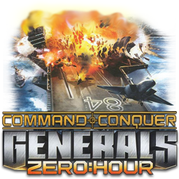
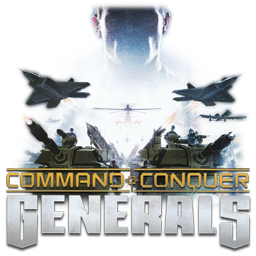

The modern launcher & content platform for
Command & Conquer: Generals & Zero Hour
Install, switch, and launch vanilla, competitive, and modded setups without touching your clean game installation or juggling files by hand.

Zero Hour (Vanilla)
Clean base install • GenTool v8.7 enabled
Generals Online
Modern lobby matchmaking & auto-updatesShockWave Mod
12 Custom Generals • Base game files untouchedImport Local Content
Drop any mod folder, ZIP, or .exe. GenHub automatically fixes GenLauncher scrambled .gib archives back to standard .big files.
Generals Online Matchmaking
Community Outpost • Automated Delta UpdatesLow-latency multiplayer without VPNs or port forwarding. Automatically downloads client engine and tournament map updates.
TheSuperHackers Community Engine
GamePatch 2.0 • High-DPI & Bug Fixes4K font scaling, dual-monitor mouse clip, synchronized economy stats HUD, and memory leak patches.
ShockWave 1.205
Total Conversion • Content-AddressedComprehensive Zero Hour faction overhaul with custom voiceovers, balanced generals, and sandboxed INIs.
Tournament MapPack 2026
32 Competitive Maps • Auto-Rendered MinimapsVerified competitive map pool with exact GenTool CRC synchronization and pre-extracted radar views.
Replay Manager
USA Air Force vs GLA Stealth
Tournament Desert • 22:45 • ZH 1.04 + GenTool 8.7China Tank vs USA Laser
Flash Fire • 18:12 • Generals Online Match #1940Map Manager & MapPack Bundler
Desert Fury [ZH]
2 Players • 320x320Defcon 6 Tournament
6 Players • 512x512Native Steam Integration
GenHub uses Steam AppID injection when starting profiles. Your official Steam playtime increments normally, Steam Overlay functions in-game for friends chat and screenshots, and your friends see you playing Command & Conquer.
- Works with The Ultimate Collection
- In-game Shift+Tab Steam Overlay active
- Core Steam installation files remain untouched
Local Content & GenLauncher Repair
Use Add Local to import custom folders, ZIP archives, or standalone executables. GenHub automatically normalizes GenLauncher's scrambled .gib files back to standard .big archives and strips leftover .GLR, .GOF, and .GLTC suffixes.
- Reverses scrambled .gib files automatically
- Cleans broken GenLauncher symlinks
- Immutable content manifests for fast reuse
Isolated Workspaces (0 MB Disk Overhead)
Every profile launches from an isolated directory created via NTFS Hardlinks in less than 50 milliseconds. The 5+ GB of vanilla game assets are shared directly without duplicating files or consuming extra drive space.
- Base game is 100% read-only and corruption-proof
- Switch between 10 mods with zero file collisions
- Content-addressed deduplication (CAS)
Generals Online Multiplayer
Modern online matchmaking without GameSpy, Hamachi, or router port-forwarding. Traffic travels across low-latency relay routers with AES-256 encryption. Game client binaries and community maps update automatically in the background.
- Built-in NAT traversal for direct connections
- Automatic delta sync for maps and engine patches
- GenTool v8.7 anti-cheat and CRC validation
Solving 20 Years of Modding Friction
Zero Hour was never built for multi-mod setups, Steam overlays, or modern operating systems. GenHub isolates your files so you can install, test, and switch setups cleanly.
“Think of Zero Hour like a classic car we all love, like a blue W203 Mercedes-Benz. Over the years we have upgraded it with custom dashboards (ControlBar), better steering (HotKeys), extra performance (GenTool), and sent it to the shop for servicing and stage 1 tuning (GenPatcher).
The problem is that switching between a modded setup and a competitive setup usually means reinstalling the game or juggling folders. For Steam players, installing mods traditionally requires overwriting files in your clean game directory. That breaks playtime tracking, disables the Steam Overlay, and risks getting wiped whenever Steam runs a file check. Managing 1,200 maps gets tedious, and digging through your documents folder to install or share replays is a pain.”
Manual Installation
- Overwritten Base Files: Installing mods directly into your game directory replaces vanilla assets, requiring manual backups or a full reinstallation to revert.
- Bypassed Steam Features: Custom launchers run outside Steam, disabling the Shift+Tab overlay and leaving gameplay hours unrecorded on your profile.
-
Scrambled File Formats: Older tools renamed
.bigarchives to.giband left orphaned.GLRor.GOFextensions across your disk. - Connection Setup Hurdles: Direct IP multiplayer requires third-party tunneling software (Hamachi or Radmin) or manual router port configurations.
- Silent Replay Desyncs: Watching replays from past tournaments or friends fails with missing asset errors because the original mod build cannot be identified.
GenHub Architecture
- Immutable Base Directory: Profiles run in sandboxed folders via CAS hardlinks—your clean install stays untouched and switching requires zero file copying.
- Native Steam Proxy: Retains official Steam integration across all profiles, logging playtime to your account and keeping the in-game overlay active.
-
Lossless Local Import: Automatically scans and repairs modified
.gibfiles back to standard.bigarchives during folder import. - Direct Multiplayer: Built-in Generals Online matchmaking with low-latency NAT traversal connects you directly with zero router configuration.
- CRC-Aware Replay Launcher: Inspects match headers and version checksums to match the exact build and launch the correct profile automatically.
The Four Foundations of GeneralsHub
Four dedicated modules designed to launch, discover, configure, and maintain Command & Conquer environments.
GameProfiles • The Master Mechanic
Organize vanilla, competitive, and modded setups into distinct, isolated environments. Profiles use content-addressed storage (CAS) hardlinks so vanilla game files stay completely untouched, requiring zero extra disk space.
- Universal Detection: Automatically discovers Steam, EA App, The First Decade, and original CD installations across Windows, Linux, and macOS.
- Steam Launch Proxy: Playtime records to your official Steam profile with in-game overlay (Shift+Tab) and friend status active in all mods.
- Desktop Shortcuts: Generate standalone desktop shortcuts to launch any profile directly with one double-click.
Downloads • The Parts Catalog
A decentralized package repository connecting community creators directly to players. Install, test, and manage mods, map packs, and engine patches without manual file extractions or ZIP hunting.
- Verified Repositories: One-click installs for Generals Online, TheSuperHackers Weekly builds, and the CommunityPatch.
- genhub:// Deep Linking: Subscribe to packages directly from Discord and community websites via the registered OS protocol handler.
- Automated Maintenance: Verifies file integrity, cleans orphaned cache entries, and handles safe uninstalls.
Tools • Power Tools for Players & Creators
Integrated utilities to diagnose problems, review tournament matches, and manage content collections without relying on separate external programs.
- GenPatcher Diagnostic Engine: Automated health checks, runtime repairs, and GenTool integration for modern widescreen setups.
- Replay Manager: Inspects match headers, factions, and CRC checksums to identify and launch the matching game profile automatically.
- Map Manager: Drag-and-drop ZIP and folder imports with auto-rendered minimaps and one-click cloud share links.
Info & Guides • Knowledge Base
Comprehensive documentation and troubleshooting resources built directly into the launcher, eliminating the need to search through outdated forum threads.
- First-Time QuickStart: Step-by-step walkthrough covering initial setup, game directory verification, and profile creation.
- Synchronized Troubleshooting: Resolves common launch and multiplayer errors using verified solutions synced directly from legi.cc.
- Network Status: Live Generals Online server availability, active player counts, and community news updates.
Get Playing in Under 60 Seconds
No complicated setup wizards or manual file replacements. Three simple steps to pristine Command & Conquer gaming.
Detect or Select Game
Launch GenHub. It automatically detects your Command & Conquer Generals and Zero Hour installations across Steam, EA App, Origin, or legacy CD directories.
Apply Modern Display & GenTool Fixes
GenHub configures clean widescreen resolutions (1080p, 1440p, or 4K), resolves startup issues, and activates GenTool for modern hardware.
Pick Profile & Play
Choose pristine Vanilla 1.04, jump into Generals Online matchmaking, or import your favorite local mods. Click Launch and enjoy flawless C&C gaming.
Supported by and Integrated with the C&C Community
Frequently Asked Questions
Everything you need to know about compatibility, file safety, and multiplayer.
Never. GeneralsHub uses isolated workspace sandboxing powered by NTFS hardlinks. When you launch a mod or community patch, it runs inside its own isolated folder while leaving your base game installation completely read-only and untouched. You can switch between 10 mods and vanilla without ever having to reinstall.
Play Command & Conquer Without the Headache
Download GeneralsHub for Windows to get flawless widescreen resolutions, crash-free stability, isolated mod profiles, and Generals Online matchmaking.
One Question for the C&C Community
“What is one feature you would like to have implemented that annoys or bugs you while playing Zero Hour that GenHub can solve?”